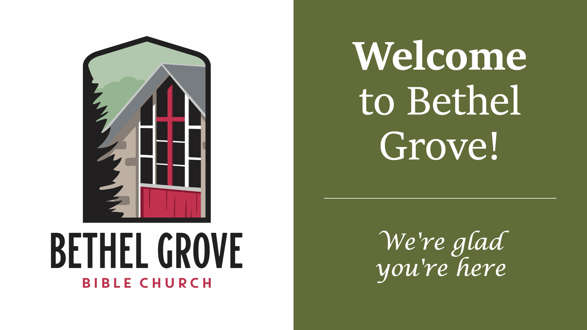
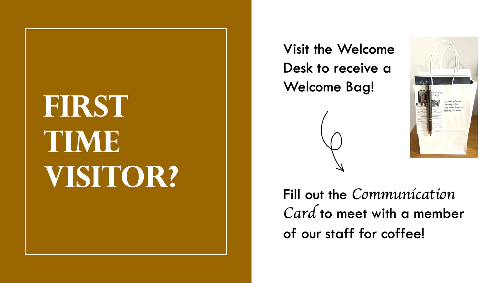
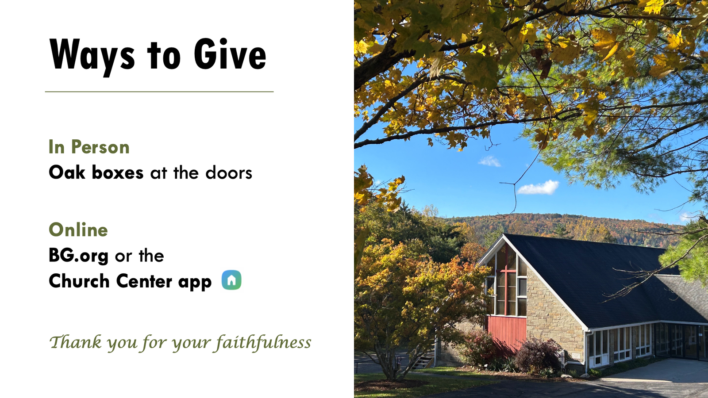
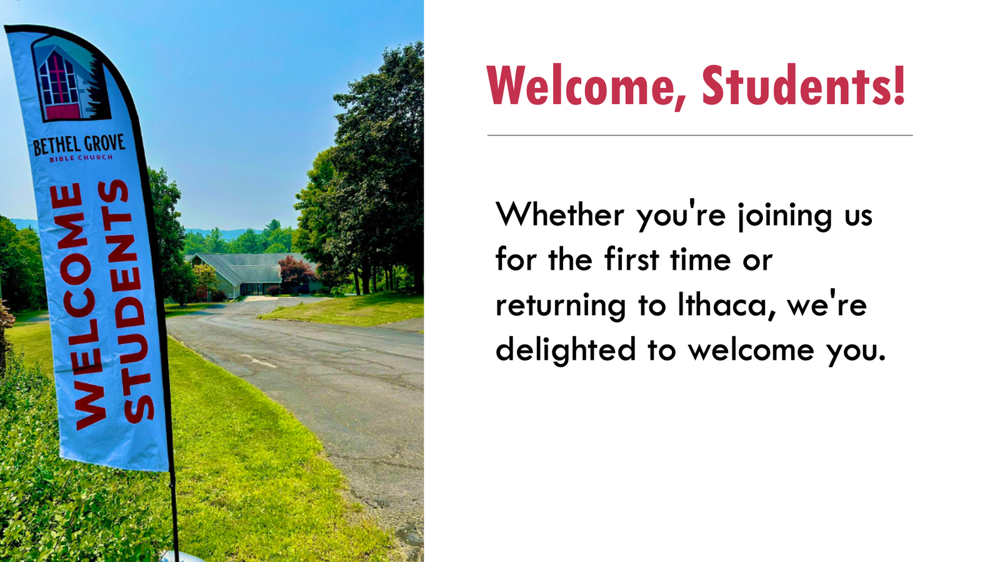

Bethel Grove Bible Church
Church Media Design
Slides and graphics for weekly services and campus events, shown during service and shared on Instagram and Facebook.
- Role
- Social Media Intern
- Timeline
- Aug 2026 to present
- Tools
- PowerPoint
- Channels
- Instagram, Facebook, service slides
Overview
As Bethel Grove's social media intern, I design the announcement slides and graphics for weekly service. My supervisor gave me the freedom to redesign the recurring slides with my own artistic flair.
Redesigning recurring slides
Each pair below shows the original slide next to my redesign.
The old slides relied on heavy drop shadows, boxed text, and a different color scheme on every slide, so nothing felt connected.
I rebuilt them around a small palette pulled from the church logo, cleaner type pairings, and more breathing room, so each slide is easy to read from the back of the room and still feels like part of one set.
Welcome

My redesignChristian Education Series
First Time Visitor

My redesignMore slides
Announcement slides shown on screen during Sunday service


Event graphics
Graphics promoting campus events on Instagram and Facebook, like this poster for an open Q&A night with our pastor.
Next project
Rotating LiDAR Mount